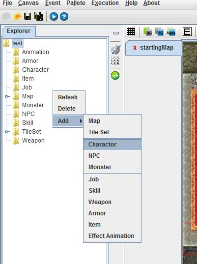
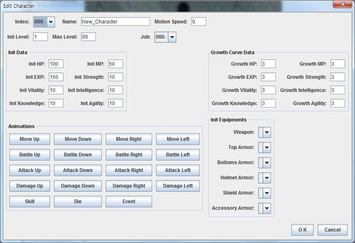
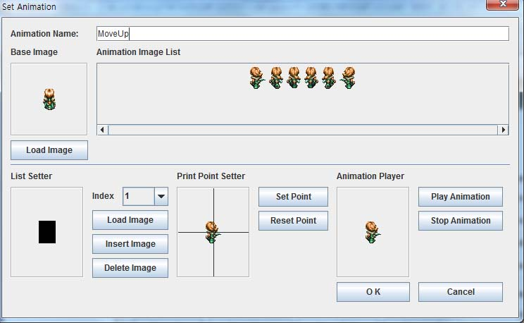
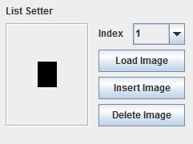
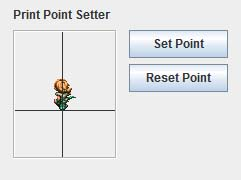
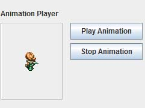
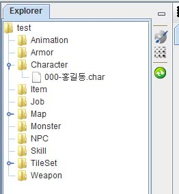
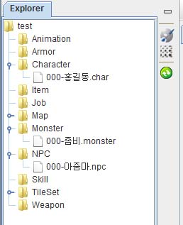

Step 3. 캐릭터, 몬스터, NPC
맵을 그렸습니다.
이번에는 캐릭터들을 만들어 보겠습니다. 일단 프로젝트 탐색기를 보도록 합시다.

붉게 표시한 탐색기 보이기/숨기기 버튼을 누릅니다.
붉게 표시한 버튼을 누르면 탐색기가 나타납니다. 버튼을 다시 누르면 탐색기가 숨겨지게 됩니다.

탐색기가 나타났으면 마우스 오른쪽을 클릭 하여 팝업 메뉴를 불러옵니다
Add->character 선택하여 캐릭터를 추가합니다.
이렇게 추가되는 캐릭터는 유저가 주인공으로 사용할 캐릭터 입니다.

- 캐릭터 생성 화면
처음 생성하는 캐릭터 이기 때문에 index 번호는 000번으로 지정이 되어 있습니다.
이후 캐릭터를 생성하면 할수록 001번, 002번 새로운 번호를 부여 하면 됩니다.
이름, 초기 레벨, 최대 레벨, 초기 능력치들, 레벨 업 시, 늘어나는 능력치 수준
무기와 같은 아이템 소지, 캐릭터의 이미지와 에니메이션을 지정 할수 있습니다.
능력치는 초기값을 사용하고 이름은 홍길동으로 하였습니다.
또한 레벨이 오를 시 모든 능력치가 4씩 오르도록 설정 합니다.
이제 캐릭터 이미지와 에니메이션을 설정 해보도록 하겠습니다. 방식은 전부 동일합니다.
Move xxx : 캐릭터가 이동하는 경우 4방향 이미지의 설정
Battle xxx : 캐릭터가 공격모드가 된 경우 4방향 이미지 설정
Attack xxx : 캐릭터가 공격을하는 경우 4방향 이미지 설정
Damage xxx : 캐릭터가 공격을 받았을 경우 4방향 이미지 설정
Skill : 필살 기술의 이미지
Die : 죽었을 경우 이미지
Event : 캐릭터가 특이 행동을 할 때, 특수한경우의 이미지 설정

-Move up 이미지 설정
모두 설정하는 방식이 동일 하기 때문에, 캐릭터가 위로 가는 경우 예를 들어서 설명하겠습니다.
Base Image : 캐릭터가 가만히 있을 때, Load image 버튼으로 교체 가능.
Animation Image List : 캐릭터가 위로 이동할 때, 연속된 이미지의 리스트, 처음부터 인덱스 1~6번
List Setter:

1. Load Image로 외부에서 이미지를 가져와서 Animation Image List에
해당 인덱스의 위치에 새로운 이미지를 삽입(Insert Image) 할 수 있습니다.
2. Animation Image List에서 제거하고 싶은 인덱스 번호를 선택한 후
Delete Image 버튼을 이용하여 제거 할수 있습니다.
Print Point Setter :

캐릭터의 무게 중심을 설정 합니다. 설정된 부분이 캐릭터의 중심으로 인식 됩니다.
발바닥이나 낭심 부분을 클릭하여 중심을 마춘후 Set Point를 클릭하여 설정을 완료합니다.
다시 초기 설정으로 되돌리고 싶으면 Reset Point를 클릭합니다.
Animation Player:

Animation Image List에 지정된 연속된 이미지들을 실제로 재생해 봅니다.
이상으로 캐릭터의 이미지 에니메이션 세팅을 보았습니다. 설명은 했지만
그냥 기본 설정으로 사용할 것이기 때문에 별다른 설정은 하지 않고 바로 O K 를 눌러 캐릭터를 생성합니다.

-트리에 홍길동 캐릭터가 추가 됬습니다.
캐릭터 추가와 마찬가지 방식으로
프로젝트 탐색기의 팝업 메뉴에서
Add -> Monster
Add -> Npc
를 하여 몬스터와 NPC 를 생성합니다.

캐릭터와 동일한 능력치로 하여 좀비라는 몬스터와 아줌마라는 NPC를 생성했습니다.
이번 장에서는 기본값만을 사용하여 캐릭터들을 만들었습니다.
캐릭터, 몬스터, NPC 모두 생성 방법은 동일합니다.
지금은 기본 설정을 이용했기 때문에 기본 이미지와 능력치를 사용했습니다만,
취향과 상황에 마춰서 능력치와 캐릭터의 이미지를 입력하시면 더 다양한 캐릭터들을 만들 수 있습니다.
이외 에도 특수 애니메이션, 방어구, 직업, 아이템, 스킬 등 많은 설정이 가능합니다.
이것은 메뉴얼에서 참고 하시면 됩니다.
|